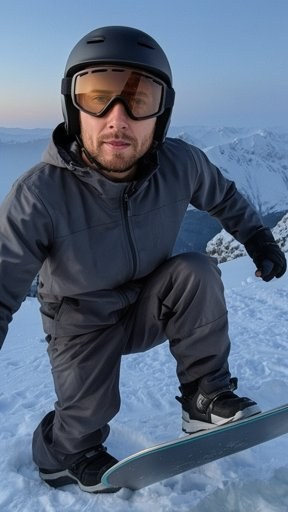
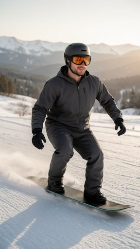
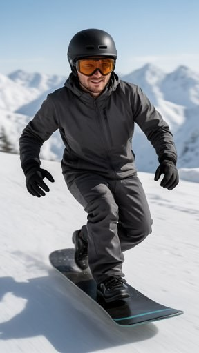
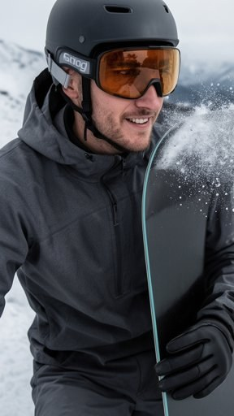
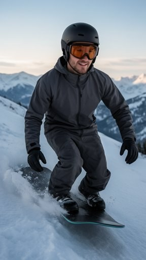
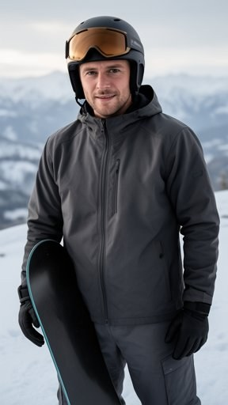

Snowboard 21 Days — Plates (Clear Run)
Plate pack · scroll · pick / kill before any Kling spend · Share image → Save to Photos

1 · tip-in — ridge edge, board tips downhill (hook)

2 · carve-morning — easy morning light (Day 7)

3 · open-slope — more pace, confident (Day 14)

4 · spray-close — face + board spray (neurotoxin)

5 · fall-line — controlled speed (Day 21)

6 · bottom-stop — clear-eyed CTA
Plates only — no motion until Blake approves.